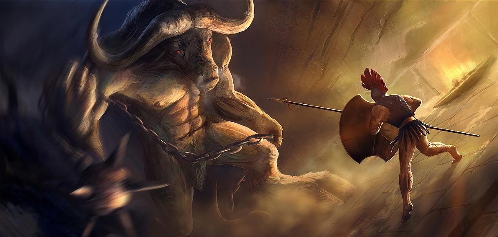

El Minotauro es una de las criaturas más famosas de la mitología. Se representa con cuerpo de hombre y cabeza de toro.
Según la leyenda, nació como resultado de una maldición divina y fue
considerado una criatura salvaje, extremadamente fuerte y peligrosa.
El rey Minos ordenó construir un enorme laberinto en la isla de Creta
para encerrarlo. Este laberinto fue diseñado por el famoso inventor de forma tan compleja que casi nadie podía salir de él.
Durante años, jóvenes eran enviados al laberinto como sacrificio para
alimentar al Minotauro. Sin embargo, el héroe
enfrentarse a la bestia.
Gracias a la ayuda de Ariadna, que le dio un hilo para marcar el camino,
Teseo logró entrar al laberinto, derrotar al Minotauro y regresar con vida.
Esta historia simboliza la lucha entre la razón y la bestialidad, así
como el valor frente al miedo.